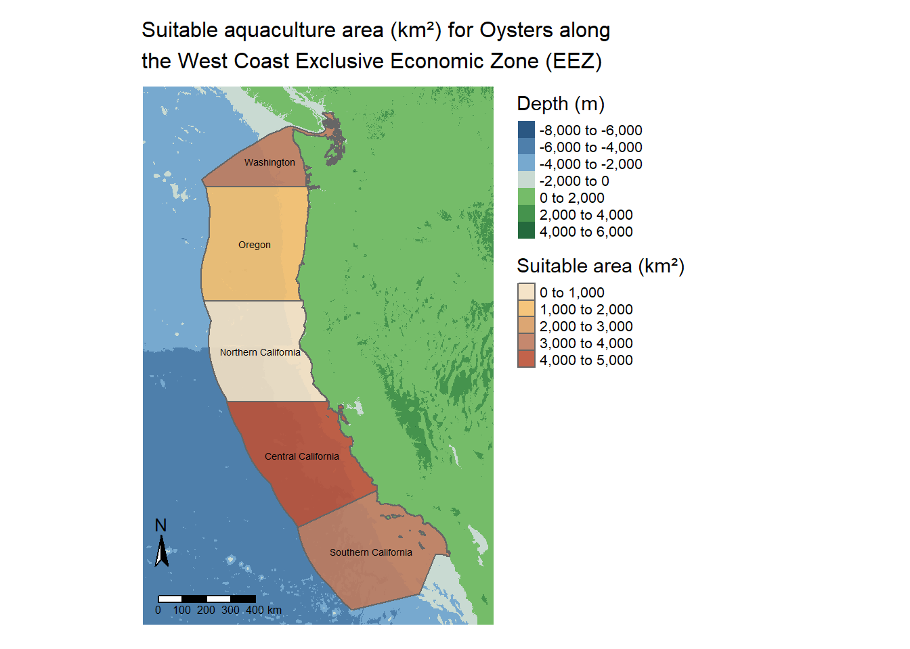
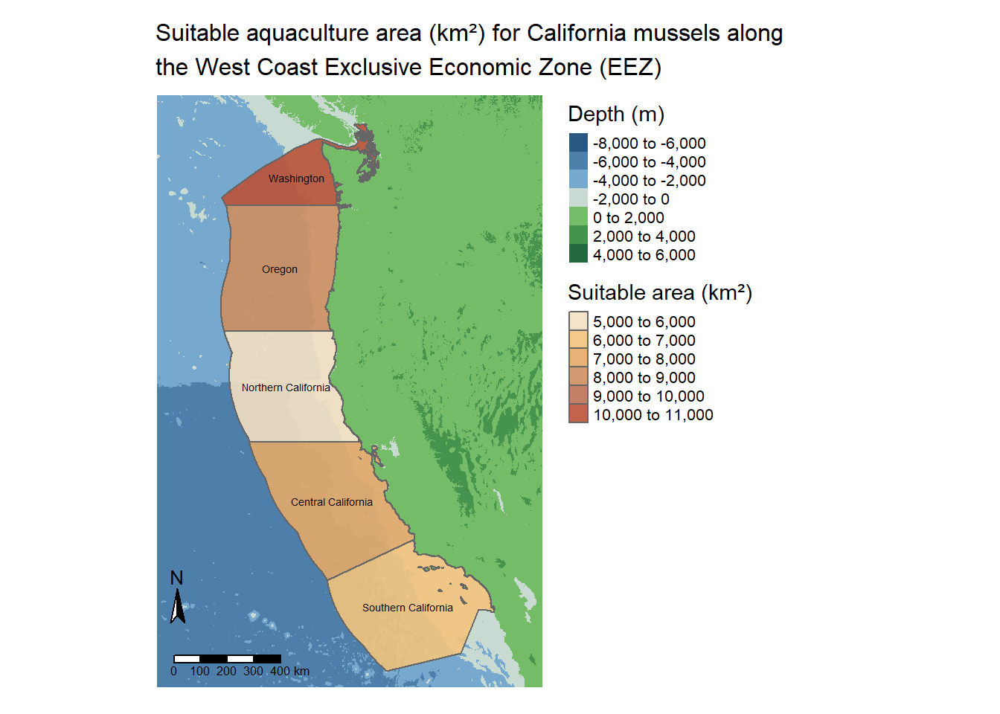

Show the code
library(tidyverse)
library(tmap)
library(terra)
library(here)
library(sf)
library(paletteer)Prioritizing potential aquaculture
Marine aquaculture can play a major role in the global food supply as a protein source. It has the potential to be more sustainable than land-based meat production. According to Gentry et al. global seafood demand could be met using less than 0.015% of total ocean area.
The goal of this assignment is to determine potential aquaculture producing areas within the Exclusive Economic Zones (EEZ) on the west coast. A workflow will be produced to find suitable aquaculture locations based on suitable sea surface temperature (SST) and depth values for oysters. This workflow will then be transferred into a function to be applied to other species given certain parameters.
library(tidyverse)
library(tmap)
library(terra)
library(here)
library(sf)
library(paletteer)# Shapefile for the West Coast EEZ
eez <- read_sf(here("data", "wc_regions_clean.shp"))
# Depth raster
depth <- rast(here("data", "depth.tif"))
# Load sst data, use file path
files <- list.files(
here("data"), pattern = "*sst",
full.names = TRUE)
sst <- c(rast(files))# Set the all CRSs to EPSG:4326
eez <- st_transform(eez, crs("EPSG:4326"))
depth <- project(depth, crs("EPSG:4326"))
sst <- project(sst, crs("EPSG:4326"))if (st_crs(eez) == st_crs(depth) && st_crs(depth) == st_crs(sst)){
print("All CRSs are the same")
} else {
warning("CRSs are NOT the same")
}[1] "All CRSs are the same"# Find mean SST from 2008-2012
# Taking the mean of the 5 SST layers and turning it into one layer
mean_sst <- app(sst, fun = mean, na.rm = TRUE)
# Convert average SST from Kelvin to Celsius
sst_c <- mean_sst - 273.15
# Crop depth raster to match extent of SST raster
depth_crop <- crop(depth, sst_c)
# Resample the depth data to match the resolution of the SST data using the nearest neighbor approach
depth_resample <- resample(depth_crop, sst_c, method = "near")
# Check that depth and SST match in resolution, extent and CRS
sst_depth <- c(sst_c, depth_resample)To find suitable locations, we need to reclassify our rasters to places that are and are not suitable for our given species. In this case, oysters can live within a maximum sea surface (SST) of 30 degrees Celsius and a minimum SST of 11 degrees Celsius. Likewise, their depth ranges from the surface at 0 meters to a maximum depth of 70 meters.
# Create reclassification matrix for SST
sst_rcl <- matrix(c(-Inf, 11, 0,
11, 30, 1,
30, Inf, 0),
ncol = 3, byrow = TRUE)
# Use reclassification matrix to reclassify sst raster
sst_reclassify <- classify(sst_c, rcl = sst_rcl)
# Create classification matrix for Depth
depth_rcl <- matrix(c(-Inf, -70, 0,
-70, 0, 1,
0, Inf, 0),
ncol = 3, byrow = TRUE)
# Reclassify Depth raster
depth_reclassify <- classify(depth_resample, rcl = depth_rcl)
# Find areas that satistfy both SST and Depth
# Use lapp() to multiple values of rasters together
sst_depth_condition <- lapp(c(sst_reclassify, depth_reclassify), fun = "*")# Assign raster values of 0 to NA for cellSize calculation
sst_depth_NA <- sst_depth_condition
sst_depth_NA[sst_depth_NA == 0] <- NA
# Find suitable area
suitable_area <- cellSize(sst_depth_NA,
mask = TRUE,
unit = "km")
# Rasterize the eez data
eez_raster <- rasterize(eez, suitable_area, "rgn")
# Sum suitable areas for each eez
eez_suitable <- zonal(x = suitable_area,
z = eez_raster,
fun = "sum",
na.rm = TRUE)kableExtra::kable(eez_suitable,
col.names = c("Region", "Suitable Area (km\u00B2)"),
align = "c",
caption = "Suitable area (km\u00B2) for Oysters in the west coast EEZ")| Region | Suitable Area (km²) |
|---|---|
| Central California | 4939.7990 |
| Northern California | 438.1482 |
| Oregon | 1533.0726 |
| Southern California | 3811.8048 |
| Washington | 3224.6860 |
# Join suitable eez data with the original eez for the map
eez_join <- left_join(eez, eez_suitable, by = "rgn")
# Map of suitable areas for Oysters
tm_shape(depth_crop) +
tm_raster(palette = paletteer_c("ggthemes::Green-Blue Diverging", 7, direction = -1),
title = "Depth (m)",
midpoint = NA) +
tm_shape(eez_join) +
tm_polygons(col = "area",
palette = paletteer_c("ggthemes::Classic Area-Brown", 5),
title = "Suitable area (km\u00B2)",
alpha = 0.9) +
tm_text("rgn",
size = 0.45,
col = "black") +
tm_layout(frame = FALSE,
legend.outside = TRUE,
legend.text.size = 0.65,
main.title = "Suitable aquaculture area (km\u00B2) for Oysters along \nthe West Coast Exclusive Economic Zone (EEZ)",
main.title.size = 1.00) +
tm_compass(position = c(0, 0.125),
size = 1.5) +
tm_scale_bar(position = c(0.05, 0.025)) 
The California mussel was chosen as the second species because of its high potential to be aquacultured. The species has a depth range of 0 - 100 meters and a temperature range of 5 - 22 degrees Celsius. The California mussel can be seen all along the west coast, but it will be interesting to see which regions contain the highest habitable area.
aqua_fun <- function(species, max_sst, min_sst, max_depth, min_depth ){
# Load eez data
eez <- read_sf(here("data", "wc_regions_clean.shp"))
# Load depth data
depth <- rast(here("data", "depth.tif"))
# Load sst data, use file path
files <- list.files(
here("data"), pattern = "*sst",
full.names = TRUE)
sst <- c(rast(files))
# Set CRS all the same
eez <- st_transform(eez, crs("EPSG:4326"))
depth <- project(depth, crs("EPSG:4326"))
sst <- project(sst, crs("EPSG:4326"))
# Checking that the CRSs reprojected to EPSG:4326
if (st_crs(eez) == st_crs(depth) && st_crs(depth) == st_crs(sst)){
print("All CRSs are the same")
} else {
warning("CRSs are NOT the same")
}
# Find mean SST from 2008-2012
mean_sst <- app(sst, fun = mean, na.rm = TRUE)
# Convert average SST from Kelvin to Celsius
sst_c <- mean_sst - 273.15
# Crop depth raster to match extent of SST raster
depth_crop <- crop(depth, sst_c)
# The resolutions of the SST and depth data do not match
# Resample the depth data to match the resolution of the SST data using the nearest neighbor approach
depth_resample <- resample(depth_crop, sst_c, method = "near")
# Check that depth and SST match in resolution, extent and CRS
sst_depth <- c(sst_c, depth_resample)
# Create reclassification matrix for SST
sst_rcl <- matrix(c(-Inf, min_sst, 0,
min_sst, max_sst, 1,
max_sst, Inf, 0),
ncol = 3, byrow = TRUE)
# Use reclassification matrix to reclassify sst raster
sst_reclassify <- classify(sst_c, rcl = sst_rcl)
# Create classification matrix for Depth
depth_rcl <- matrix(c(-Inf, -max_depth, 0,
-max_depth, -min_depth, 1,
-min_depth, Inf, 0),
ncol = 3, byrow = TRUE)
# Reclassify Depth raster
depth_reclassify <- classify(depth_resample, rcl = depth_rcl)
# Find areas that satistfy both SST and Depth
# Use lapp() to multiple values of rasters together
sst_depth_condition <- lapp(c(sst_reclassify, depth_reclassify), fun = "*")
# Assign raster values of 0 to NA for cellSize calculation
sst_depth_NA <- sst_depth_condition
sst_depth_NA[sst_depth_NA == 0] <- NA
# Find suitable area
suitable_area <- cellSize(sst_depth_NA,
mask = TRUE,
unit = "km")
# Rasterize the eez data
eez_raster <- rasterize(eez, suitable_area, "rgn")
# Sum suitable areas for each eez
eez_suitable <- zonal(x = suitable_area,
z = eez_raster,
fun = "sum",
na.rm = TRUE)
# Join eez_suitable data with the original eez data to map
eez_join <- left_join(eez, eez_suitable, by = "rgn")
# Map of suitable areas
map <- tm_shape(depth_crop) +
tm_raster(palette = paletteer_c("ggthemes::Green-Blue Diverging", 7, direction = -1),
title = "Depth (m)",
midpoint = NA) +
tm_shape(eez_join) +
tm_polygons(col = "area",
palette = paletteer_c("ggthemes::Classic Area-Brown", 5),
title = "Suitable area (km\u00B2)",
alpha = 0.9) +
tm_text("rgn",
size = 0.45,
col = "black") +
tm_layout(frame = FALSE,
legend.outside = TRUE,
legend.text.size = 0.65,
main.title = paste("Suitable aquaculture area (km\u00B2) for", species, "along \nthe West Coast Exclusive Economic Zone (EEZ)"),
main.title.size = 1.00) +
tm_compass(position = c(0, 0.125),
size = 1.5) +
tm_scale_bar(position = c(0.05, 0.025))
# Print both outputs, Kable table and Map
return(map)
}# Use my function for the California mussel, *Mytilus californianu*
# species = "California mussel", max_sst = 22, min_sst = 5, max_depth = 100, min_depth = 0
aqua_fun("California mussels", 22, 5, 100, 0)[1] "All CRSs are the same"
This function could be used to find suitable aquaculture producing locations for marine species. Of course there are limitations as SST and depth are the only parameters needed. The function is limited to only the west coast of the United States but it shows the potential area for where species could be farmed. It can act as a preliminary screening.
tribble(
~Data, ~Citations, ~Link,
"A review of California mussel (Mytilus californianus) fisheries biology and fisheries programs.", " Schmidt, D. 1999 A review of California mussel (Mytilus californianus) fisheries biology and fisheries programs. Mytilus californianus; biology; Canadian Stock Assessment Secretariat Research Document 99/187.", "[Species](https://www.sealifebase.ca/summary/Mytilus-californianus.html)",
"Mapping the global potential for marine aquaculture", "Gentry, R.R., Froehlich, H.E., Grimm, D. et al. Mapping the global potential for marine aquaculture. Nat Ecol Evol 1, 1317–1324 (2017). https://doi.org/10.1038/s41559-017-0257-9", "[Aqua](https://www.nature.com/articles/s41559-017-0257-9#citeas)"
) %>%
kableExtra::kable()| Data | Citations | Link |
|---|---|---|
| A review of California mussel (Mytilus californianus) fisheries biology and fisheries programs. | Schmidt, D. 1999 A review of California mussel (Mytilus californianus) fisheries biology and fisheries programs. Mytilus californianus; biology; Canadian Stock Assessment Secretariat Research Document 99/187. | Species |
| Mapping the global potential for marine aquaculture | Gentry, R.R., Froehlich, H.E., Grimm, D. et al. Mapping the global potential for marine aquaculture. Nat Ecol Evol 1, 1317–1324 (2017). https://doi.org/10.1038/s41559-017-0257-9 | Aqua |